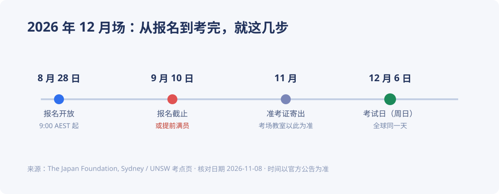
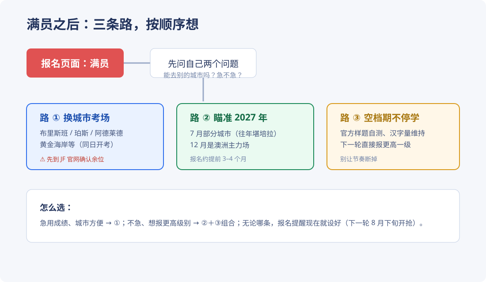
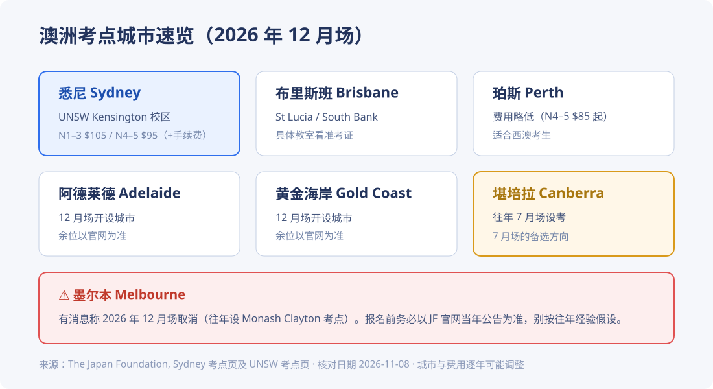
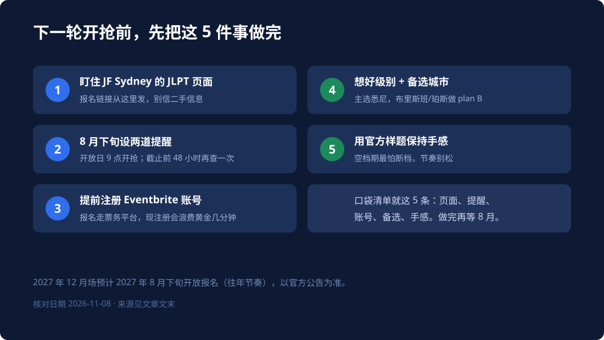
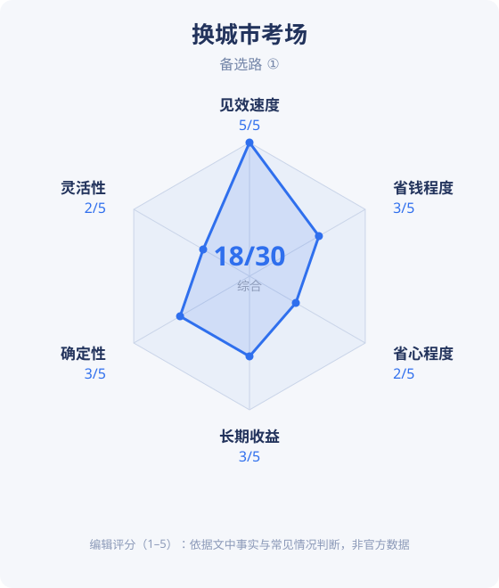
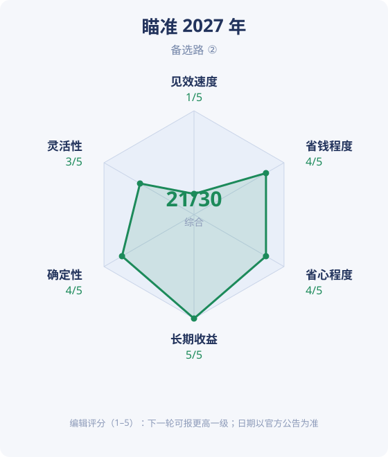
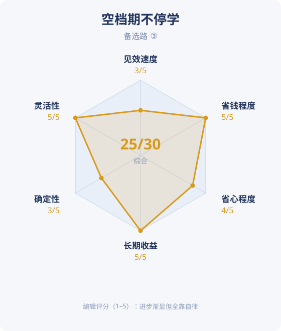

JLPT 悉尼考位满了怎么办？三条备选路（2026/2027 版）
9 月 10 日下午 5 点整，悉尼的 JLPT 报名通道关了。手慢一步的人，看到的按钮是灰色的。
悉尼的报名窗口，比你想的短得多
很多人以为报名会开一个月。实际上，2026 年 12 月场是 8 月 28 日早上 9 点（AEST）开放，9 月 10 日下午 5 点就关。前后只有两周。官方还写明：名额满了会提前关闭。也就是说，真正的窗口可能比两周还短。
2026 年 12 月 6 日（周日）这一场，悉尼考点设在 UNSW Kensington 校区的 Patricia O'Shane Building。报名不走学校官网，走 Eventbrite 拍票。对，就是抢票。

为什么会这么挤？澳洲一年就两次机会，12 月是主力场。窗口只开两周，名额还写明会提前关，挤是必然的。
钱这块也提前说清楚，悉尼考点的价格是：
| 级别 | 考试费 | Eventbrite 手续费 |
|---|---|---|
| N1 / N2 / N3 | $105 | $6.81 |
| N4 / N5 | $95 | $6.27 |
顺便一提，珀斯的 N4/N5 只要 $85 加手续费。差价不大，但如果你本来就在西边，这账不难算。
满员那一刻，先做一件事：查别的城市
先别慌，也别急着把目标推到明年。JLPT 在澳洲不止悉尼一个考点，而且同一天开考：试卷一样，评分一样，成绩单效力也一样。悉尼满了，大概率其他城市还有。

路一：换个城市考场
2026 年 12 月场开设的城市包括布里斯班、珀斯、阿德莱德、黄金海岸，考场细节（具体哪栋楼哪间教室）要等 11 月的准考证才最终确认。布里斯班在 St Lucia / South Bank 一带，珀斯的费用还略便宜些。

换城市的真实成本是机票加住宿。悉尼飞布里斯班或阿德莱德经常有 $100 上下的票，考试在周日，请一天假或周五晚飞过去都来得及。跟"再等半年"比，很多人觉得值。
路二：瞄准 2027 年，把报名当项目管
如果不急着要成绩，等下一场反而划算。澳洲的 JLPT 以 12 月场为主力，7 月只在部分城市开设（往年有堪培拉）。2027 年 12 月场的报名，按往年节奏会落在 8 月下旬——也就是说，你还有差不多十个月准备。
这十个月怎么用，比"等"字重要。报名这件事完全可以项目化：页面收藏好、日历提醒设两道、Eventbrite 账号提前注册、级别和备选城市提前想清楚。明年 8 月底开抢的那几分钟，你就不需要运气。
路三：把空档期变成加分项
这半年真正要防的是断档。节奏一松，手感、词汇量、连着报名的劲头都会跟着掉。每天二十分钟维持汉字和词汇的手感，明年直接报高一级，比今年勉强考个 N5 划算得多。具体做三件事：用官方样题摸自己的底；把 N5/N4 的汉字量过一遍；词汇按周清。

三条路，各打一张分卡
为了帮你对号入座，我们给每条路按六个维度打了分：见效速度、省钱程度、省心程度、长期收益、确定性、灵活性。先说清楚：这是编辑评分（1–5 分），依据是上文的事实和常见情况，不是官方数据，也不是标准答案——你的处境不同，同一张卡读起来会完全不一样。



怎么读这三张卡：赶时间的看见效速度，预算紧的看省钱程度，怕麻烦的看省心程度，想着以后报更高级别的看长期收益。三条路不互斥——很多人是 ③ 垫着节奏，等 ② 的窗口，真刷到合适的余位就顺手走 ①。
下一轮开抢前，提前做这 5 件事
- 盯住 Japan Foundation Sydney 的 JLPT 页面——报名链接只从这里发；
- 8 月下旬设两道提醒：开放日早上 9 点，截止前 48 小时；
- 提前注册好 Eventbrite 账号，别在开抢那天现填信息；
- 想好级别和备选城市——主选悉尼，plan B 写布里斯班或珀斯；
- 用官方样题保持手感，别让备考断档。
常见问题
- 考位满了有候补名单吗？
- 官方页面没有写候补机制。有人退考会不会放出名额，官方没有承诺——可以偶尔刷新看看，但别把计划押在这上面。
- 报名费能退吗？
- 报名走 Eventbrite，退款规则以购票页的条款和官方说明为准。缺考不退是常见默认，报名前把条款读完。
- 准考证什么时候到？
- 12 月场的准考证一般在 11 月寄出，具体考场教室以准考证上的信息为准，网上查到的都不算数。
- 去别的城市考，成绩会有区别吗？
- 没有。JLPT 全球统一命题、统一评分，成绩单效力完全一样，区别只是你的路费和住宿。
来源与核对日期
事实核对日期：2026-11-08。考试日期、报名窗口、费用与考点信息来自 The Japan Foundation, Sydney — JLPT 页面 与 UNSW 考点页； 其他城市与墨尔本变动来自公开搜索结果。价格与考点逐年可能调整，报名前以官方公告为准。